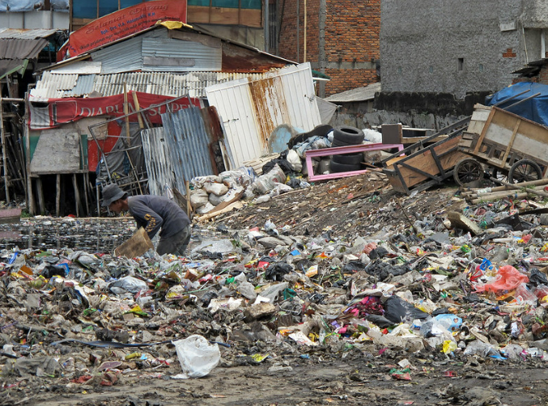

Poverty
A classic example of a wicked problem, poverty is a global issue that is of the utmost complexity and spans many fields. Within the lens of social views, individualistic culture and social structure may be a cause, especially within the US (Assari 2017). As University of Michigan's Shervin Assari explains, "societal issues, such as racism, sexism and segregation, constantly cause disparities in education, employment and income for marginalized groups. The majority group naturally has a head start, relative to groups that deal with a wide range of societal barriers on a daily basis" (Assari). Spilling into the political field, such beliefs on individualism without regard for other factors has caused contentious views, which has contributed to deadlock within the US. Within the scope of education, a lack of it both causes and is caused by poverty, due to its ability to "open the door to jobs and other resources and skills" ("11 Top Causes of Global Poverty" 2020). It's pervasiveness also makes it extremely difficult to solve worldwide.
Global Health
Within the lens of global health, poverty is a central pillar to much of its issues, as well as a result. When healthcare is poor, "And when people must travel far distances to clinics or pay for medicine, it drains already vulnerable households of money and assets, and can tip a family from poverty into extreme poverty" ("11 Top Causes of Poverty"). Poverty can be a gatekeeper for medication: "Within the top ten causes of death for poor countries, “[f]ive of the leading causes of death in low-income countries . . . are treatable infectious illnesses that are not found on the leading list of killers in high-income countries” (Farmer et al. 2013, 3).
Sources
Assari, Shervin. “Why Poverty Is Not a Personal Choice, but a Reflection of Society.” Institute for Healthcare Policy & Innovation. University of Michigan, June 30, 2017. https://ihpi.umich.edu/news/why-poverty-not-personal-choice-reflection-society.
“11 Top Causes of Global Poverty - World.” ReliefWeb, March 4, 2020. https://reliefweb.int/report/world/11-top-causes-global-poverty.
Farmer, Paul, Jim Yong Kim, Arthur Kleinman, and Matthew Basilico. “Introduction: A Biosocial Approach to Global Health.” Essay. In Reimagining Global Health: An Introduction, 1–14. University of California Press, 2013.
Image Links
- https://www.flickr.com/photos/worldbank/6466834543/in/album-72157630502568422/